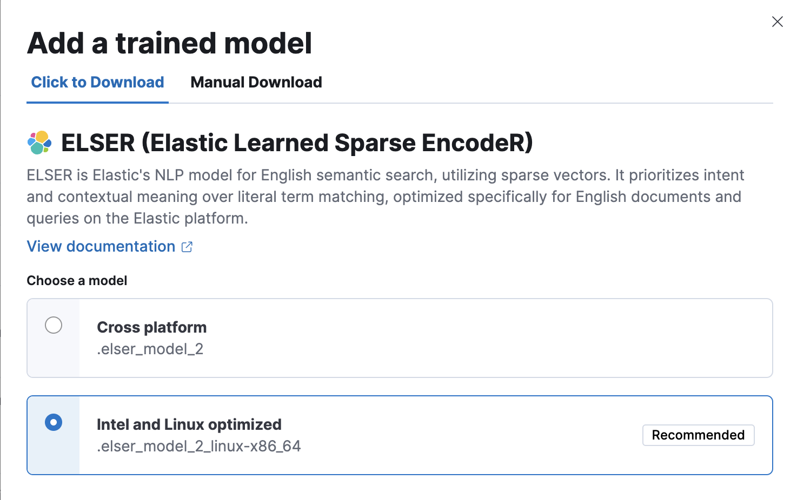

ELSER – Elastic Learned Sparse EncodeRedit
Elastic Learned Sparse EncodeR - or ELSER - is a retrieval model trained by Elastic that enables you to perform semantic search to retrieve more relevant search results. This search type provides you search results based on contextual meaning and user intent, rather than exact keyword matches.
ELSER is an out-of-domain model which means it does not require fine-tuning on your own data, making it adaptable for various use cases out of the box.
This model is recommended for English language documents and queries. If you want to perform semantic search on non-English language documents, use the E5 model.
While ELSER V2 is generally available, ELSER V1 is in [preview] This functionality is in technical preview and may be changed or removed in a future release. Elastic will work to fix any issues, but features in technical preview are not subject to the support SLA of official GA features. and will remain in technical preview.
Tokens - not synonymsedit
ELSER expands the indexed and searched passages into collections of terms that are learned to co-occur frequently within a diverse set of training data. The terms that the text is expanded into by the model are not synonyms for the search terms; they are learned associations capturing relevance. These expanded terms are weighted as some of them are more significant than others. Then the Elasticsearch sparse vector (or rank features) field type is used to store the terms and weights at index time, and to search against later.
This approach provides a more understandable search experience compared to vector embeddings. However, attempting to directly interpret the tokens and weights can be misleading, as the expansion essentially results in a vector in a very high-dimensional space. Consequently, certain tokens, especially those with low weight, contain information that is intertwined with other low-weight tokens in the representation. In this regard, they function similarly to a dense vector representation, making it challenging to separate their individual contributions. This complexity can potentially lead to misinterpretations if not carefully considered during analysis.
Requirementsedit
To use ELSER, you must have the appropriate subscription level for semantic search or the trial period activated.
The minimum dedicated ML node size for deploying and using the ELSER model is 4 GB in Elasticsearch Service if deployment autoscaling is turned off. Turning on autoscaling is recommended because it allows your deployment to dynamically adjust resources based on demand. Better performance can be achieved by using more allocations or more threads per allocation, which requires bigger ML nodes. Autoscaling provides bigger nodes when required. If autoscaling is turned off, you must provide suitably sized nodes yourself.
ELSER v2edit
Compared to the initial version of the model, ELSER v2 offers improved retrieval accuracy and more efficient indexing. This enhancement is attributed to the extension of the training data set, which includes high-quality question and answer pairs and the improved FLOPS regularizer which reduces the cost of computing the similarity between a query and a document.
ELSER v2 has two versions: one cross-platform version which runs on any hardware and one version which is optimized for Intel® silicon. The Model Management > Trained Models page shows you which version of ELSER v2 is recommended to deploy based on your cluster’s hardware. However, the recommended way to use ELSER is through the inference API as a service which makes it easier to download and deploy the model and you don’t need to select from different versions.
If you want to learn more about the ELSER V2 improvements, refer to this blog post.
Upgrading to ELSER v2edit
ELSER v2 is not backward compatible. If you indexed your data with ELSER v1, you need to reindex it with an ingest pipeline referencing ELSER v2 to be able to use v2 for search. This tutorial shows you how to create an ingest pipeline with an inference processor that uses ELSER v2, and how to reindex your data through the pipeline.
Additionally, the elasticearch-labs GitHub repository contains an interactive
Python notebook
that walks through upgrading an index to ELSER V2.
Download and deploy ELSERedit
The easiest and recommended way to download and deploy ELSER is to use the inference API.
- In Kibana, navigate to the Dev Console.
-
Create an inference endpoint with the ELSER service by running the following API request:
PUT _inference/sparse_embedding/my-elser-model { "service": "elser", "service_settings": { "num_allocations": 1, "num_threads": 1 } }The API request automatically initiates the model download and then deploy the model.
Refer to the ELSER inference service documentation to learn more about the available settings.
After you created the ELSER inference endpoint, it’s ready to be used for semantic search.
The easiest way to perform semantic search in the Elastic Stack is to follow the semantic_text workflow.
Alternative methods to download and deploy ELSERedit
You can also download and deploy ELSER either from Machine Learning > Trained Models, from Search > Indices, or by using the trained models API in Dev Console.
- For most cases, the preferred version is the Intel and Linux optimized model, it is recommended to download and deploy that version.
- You can deploy the model multiple times by assigning a unique deployment ID when starting the deployment. It enables you to have dedicated deployments for different purposes, such as search and ingest. By doing so, you ensure that the search speed remains unaffected by ingest workloads, and vice versa. Having separate deployments for search and ingest mitigates performance issues resulting from interactions between the two, which can be hard to diagnose.
Using the Trained Models page
Using the Trained Models pageedit
- In Kibana, navigate to Machine Learning > Trained Models. ELSER can be found in the list of trained models. There are two versions available: one portable version which runs on any hardware and one version which is optimized for Intel® silicon. You can see which model is recommended to use based on your hardware configuration.
-
Click the Add trained model button. Select the ELSER model version you want to use in the opening modal window. The model that is recommended for you based on your hardware configuration is highlighted. Click Download. You can check the download status on the Notifications page.
Alternatively, click the Download model button under Actions in the trained model list.
- After the download is finished, start the deployment by clicking the Start deployment button.
-
Provide a deployment ID, select the priority, and set the number of allocations and threads per allocation values.

- Click Start.
Using the search indices UI
Using the search indices UIedit
Alternatively, you can download and deploy ELSER to an inference pipeline using the search indices UI.
- In Kibana, navigate to Search > Indices.
- Select the index from the list that has an inference pipeline in which you want to use ELSER.
- Navigate to the Pipelines tab.
-
Under Machine Learning Inference Pipelines, click the Deploy button to begin downloading the ELSER model. This may take a few minutes depending on your network.

-
Once the model is downloaded, click the Start single-threaded button to start the model with basic configuration or select the Fine-tune performance option to navigate to the Trained Models page where you can configure the model deployment.

Using the traned models API in Dev Console
Using the trained models API in Dev Consoleedit
- In Kibana, navigate to the Dev Console.
-
Create the ELSER model configuration by running the following API call:
PUT _ml/trained_models/.elser_model_2 { "input": { "field_names": ["text_field"] } }The API call automatically initiates the model download if the model is not downloaded yet.
-
Deploy the model by using the start trained model deployment API with a delpoyment ID:
POST _ml/trained_models/.elser_model_2/deployment/_start?deployment_id=for_search
You can deploy the model multiple times with different deployment IDs.
Deploy ELSER in an air-gapped environmentedit
If you want to deploy ELSER in a restricted or closed network, you have two options:
- create your own HTTP/HTTPS endpoint with the model artifacts on it,
- put the model artifacts into a directory inside the config directory on all master-eligible nodes.
Model artifact filesedit
For the cross-platform verison, you need the following files in your system:
https://ml-models.elastic.co/elser_model_2.metadata.json https://ml-models.elastic.co/elser_model_2.pt https://ml-models.elastic.co/elser_model_2.vocab.json
For the optimized version, you need the following files in your system:
https://ml-models.elastic.co/elser_model_2_linux-x86_64.metadata.json https://ml-models.elastic.co/elser_model_2_linux-x86_64.pt https://ml-models.elastic.co/elser_model_2_linux-x86_64.vocab.json
Using an HTTP serveredit
INFO: If you use an existing HTTP server, note that the model downloader only supports passwordless HTTP servers.
You can use any HTTP service to deploy ELSER. This example uses the official Nginx Docker image to set a new HTTP download service up.
- Download the model artifact files.
- Put the files into a subdirectory of your choice.
-
Run the following commands:
export ELASTIC_ML_MODELS="/path/to/models" docker run --rm -d -p 8080:80 --name ml-models -v ${ELASTIC_ML_MODELS}:/usr/share/nginx/html nginxDon’t forget to change
/path/to/modelsto the path of the subdirectory where the model artifact files are located.These commands start a local Docker image with an Nginx server with the subdirectory containing the model files. As the Docker image has to be downloaded and built, the first start might take a longer period of time. Subsequent runs start quicker.
-
Verify that Nginx runs properly by visiting the following URL in your browser:
http://{IP_ADDRESS_OR_HOSTNAME}:8080/elser_model_2.metadata.jsonIf Nginx runs properly, you see the content of the metdata file of the model.
-
Point your Elasticsearch deployment to the model artifacts on the HTTP server by adding the following line to the
config/elasticsearch.ymlfile:xpack.ml.model_repository: http://{IP_ADDRESS_OR_HOSTNAME}:8080If you use your own HTTP or HTTPS server, change the address accordingly. It is important to specificy the protocol ("http://" or "https://"). Ensure that all master-eligible nodes can reach the server you specify.
- Repeat step 5 on all master-eligible nodes.
- Restart the master-eligible nodes one by one.
- Navigate to the Trained Models page in Kibana, ELSER can be found in the list of trained models.
- Click the Add trained model button, select the ELSER model version you downloaded in step 1 and want to deploy, and click Download. The selected model will be downloaded from the HTTP/HTTPS server you configured.
- After the download is finished, start the deployment by clicking the Start deployment button.
- Provide a deployment ID, select the priority, and set the number of allocations and threads per allocation values.
- Click Start.
The HTTP server is only required for downloading the model. After the download has finished, you can stop and delete the service. You can stop the Docker image used in this example by running the following command:
docker stop ml-models
Using file-based accessedit
For a file-based access, follow these steps:
- Download the model artifact files.
-
Put the files into a
modelssubdirectory inside theconfigdirectory of your Elasticsearch deployment. -
Point your Elasticsearch deployment to the model directory by adding the following line to the
config/elasticsearch.ymlfile:xpack.ml.model_repository: file://${path.home}/config/models/` - Repeat step 2 and step 3 on all master-eligible nodes.
- Restart the master-eligible nodes one by one.
- Navigate to the Trained Models page in Kibana, ELSER can be found in the list of trained models.
- Click the Add trained model button, select the ELSER model version you downloaded in step 1 and want to deploy and click Download. The selected model will be downloaded from the model directory where you put in step 2.
- After the download is finished, start the deployment by clicking the Start deployment button.
- Provide a deployment ID, select the priority, and set the number of allocations and threads per allocation values.
- Click Start.
Testing ELSERedit
You can test the deployed model in Kibana. Navigate to Model Management > Trained Models, locate the deployed ELSER model in the list of trained models, then select Test model from the Actions menu.
You can use data from an existing index to test the model. Select the index, then a field of the index you want to test ELSER on. Provide a search query and click Test. Evaluating model recall is simpler when using a query related to the documents.
The results contain a list of ten random values for the selected field along with a score showing how relevant each document is to the query. The higher the score, the more relevant the document is. You can reload example documents by clicking Reload examples.

Performance considerationsedit
-
ELSER works best on small-to-medium sized fields that contain natural
language. For connector or web crawler use cases, this aligns best with fields
like title, description, summary, or abstract. As ELSER encodes the
first 512 tokens of a field, it may not provide as relevant of results for large
fields. For example,
body_contenton web crawler documents, or body fields resulting from extracting text from office documents with connectors. For larger fields like these, consider "chunking" the content into multiple values, where each chunk can be under 512 tokens. - Larger documents take longer at ingestion time, and inference time per document also increases the more fields in a document that need to be processed.
- The more fields your pipeline has to perform inference on, the longer it takes per document to ingest.
To learn more about ELSER performance, refer to the Benchmark information.
Further readingedit
Benchmark informationedit
The recommended way to use ELSER is through the inference API as a service.
The following sections provide information about how ELSER performs on different hardwares and compares the model performance to Elasticsearch BM25 and other strong baselines.
Version overviewedit
ELSER V2 has a optimized version that is designed to run only on Linux with an x86-64 CPU architecture and a cross-platform version that can be run on any platform.
ELSER V2edit
Besides the performance improvements, the biggest change in ELSER V2 is the introduction of the first platform specific ELSER model - that is, a model optimized to run only on Linux with an x86-64 CPU architecture. The optimized model is designed to work best on newer Intel CPUs, but it works on AMD CPUs as well. It is recommended to use the new optimized Linux-x86-64 model for all new users of ELSER as it is significantly faster than the cross-platform model which can be run on any platform. ELSER V2 produces significantly higher quality embeddings than ELSER V1. Regardless of which ELSER V2 model you use (optimized or cross-platform), the particular embeddings produced are the same.
Qualitative benchmarksedit
The metric that is used to evaluate ELSER’s ranking ability is the Normalized Discounted Cumulative Gain (NDCG) which can handle multiple relevant documents and fine-grained document ratings. The metric is applied to a fixed-sized list of retrieved documents which, in this case, is the top 10 documents (NDCG@10).
The table below shows the performance of ELSER V2 compared to BM 25. ELSER V2 has 10 wins, 1 draw, 1 loss and an average improvement in NDCG@10 of 18%.
NDCG@10 for BEIR data sets for BM25 and ELSER V2 - higher values are better)
Hardware benchmarksedit
While the goal is to create a model that is as performant as possible, retrieval accuracy always take precedence over speed, this is one of the design principles of ELSER. Consult with the tables below to learn more about the expected model performance. The values refer to operations performed on two data sets and different hardware configurations. Your data set has an impact on the model performance. Run tests on your own data to have a more realistic view on the model performance for your use case.
ELSER V2edit
Overall the optimized V2 model ingested at a max rate of 26 docs/s, compared with the ELSER V1 max rate of 14 docs/s from the ELSER V1 benchamrk, resulting in a 90% increase in throughput.
The performance of virtual cores (that is, when the number of allocations is greater than half of the vCPUs) has increased. Previously, the increase in performance between 8 and 16 allocations was around 7%. It has increased to 17% (ELSER V1 on 8.11) and 20% (for ELSER V2 optimized). These tests were performed on a 16vCPU machine, with all documents containing exactly 256 tokens.
The length of the documents in your particular dataset will have a significant impact on your throughput numbers.
Refer to this blog post to learn more about ELSER V2 improved performance.

The optimized model results show a nearly linear growth up until 8 allocations, after which performance improvements become smaller. In this case, the performance at 8 allocations was 22 docs/s, while the performance of 16 allocations was 26 docs/s, indicating a 20% performance increase due to virtual cores.

The cross-platform model performance of 8 and 16 allocations are respectively 14 docs/s and 16 docs/s, indicating a performance improvement due to virtual cores of 12%.